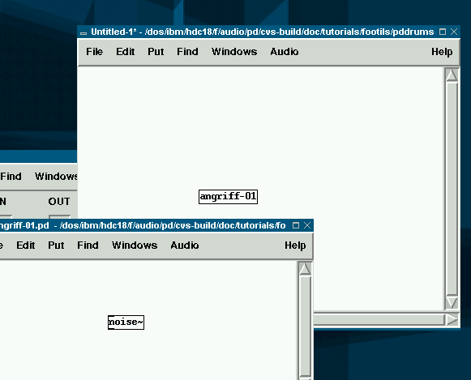
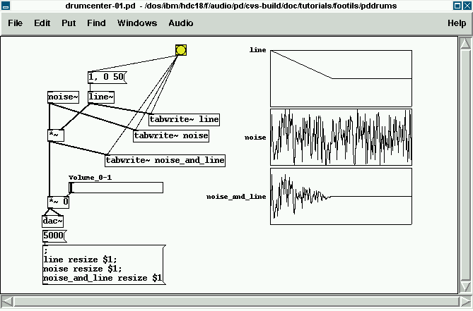
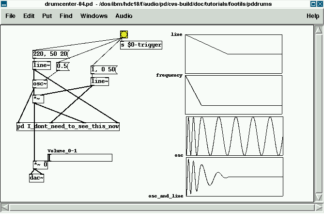

Building Drums in PD
| Autor: | Frank Barknecht |
|---|---|
| Contact: | fbar@footils.org |
Abstract
This quicktoot describes how PD can be used to build a simple drum synthesizer with graphical controls and a step sequencer.
Small is beautiful
Pure Data - or short PD - is a multimedia software environment written by Miller Puckette and others that can be used to make art in several media like music, sound or graphics. In this quicktoot we will use the sound generating capabilities of PD to build a module for drum sounds. Our drum synthesizer will use a synthesis algorithm that's very similar to the early analog or digital drumsynths of the eighties. We will not use pre-recorded samples but instead employ simple sound generators. You will be surprised, how effective this is and how much variety is possible with just two or three sound sources. On the other hand our design leaves room for improvment. By the end of this article you will be able to add these on your own. Our drummer includes a preset database: When you have found a sound, that you like, you can save it and recall it again later.
I will not go into much detail on how to install or how to use PD: You should read the documentation that comes with PD for that. I will of course explain the more advanced features of PD used and everything that is needed to follow this tutorial.
The Creator
Creating something in PD is very much like the genesis of a world as described in, well, the Bible's first book "Genesis". In the beginning you have nothing, just a large white area. You, the Creator, can create objects by a simple button press "Ctrl-1", which actually means "Let there be an object". And there was an object. But your first object is a small empty rectangle and it can do nothing, it has no way of communicating, it isn't alive yet. To create a living object you have to give it a name, you have to call it by typing the name onto the object, for example "noise~". And there was noise. With time you can populate the area with more objects, you can let them talk to each other, you can create more worlds, and you will create by giving all of them names. We maybe come to [moses] later. Our drumsynth will have the name "angriff", which is german for "attack". So our goal is, that someone can create a drumsynth by typing the name "angriff" on a new object.
This is achieved in PD by a so called "abstraction". An abstraction is simply a saved PD patch. So our very first and basically unusable version of angriff is this: A nearly empty patch with a noise~ object inside, saved under the name "angriff-01.pd".

angriff-01.pd, an unusable first version.
Even this can be used as an object. Just create a new, empty patch (with "Ctrl-n"), put an object in it and call it "angriff-01", i.e. the name of our first drum patch without the .pd-suffix.

Using the unusable angriff-01.pd in another patch. using_angriff-1.pd
PD searches for something that matches the object "angriff-01" in several places: in the list of builtin objects like "noise~", in external libraries or in its path for abstractions. If angriff-01.pd is in the same directory as the using patch or in a path known to PD through the startup option "-path /a/pd-path/", it gets found. If you click on angriff-01, you can open it to see, what's inside. Abstractions itself can use other abstractions so it's a good idea to put often used functionality into abstractions. As our final drumsynth should have a sound generating part and a GUI to control this, we will seperate both parts from each other by use of abstractions. For the synthesis of sound we will build and use an abstraction called "drumcenter" inside of the main "angriff" patch. The main patch includes the control elements for the parameters provided by "drumcenter". This way our synthesis model and the view to the user are separated.
Bring The Noise
How do drums drum? Although human dummers can spend hours tuning their drumset, drums are generally non-pitched, percussive sounds. So for our first usable version of a drumsound we take some noise as a sound source and put an amplitude envelope around the noise. A simple, builtin envelope generator in PD is line~. drumcenter-01.pd show the noise, the envelope and both multiplied together.

Enveloped noise, drumcenter-01.pd
If you listen to this patch, it already sounds a bit like a snare, doesn't it? To make this sound a bit more variable we can use filtered noise, for example with a lowpass or highpass filter. PD comes with both, so lets use them. Her's the noise filtered with the lop~ filter at a cutoff frequency of 400 Hertz:

Lowpass filtered and enveloped noise, drumcenter-02.pd
Now our patch is beginning to get a bit crammed and chaotic, so let's replace some chords with "send" and "receive" pairs, abbreviated "s" and "r". If we give those pairs names starting with $0, they get names starting with unique numbers instead of the $0 while performing. This way, we can later use several instances of our patches without conflicts between their own send and receive variables. We can also hide stuff we don't need to see in so called subpatches. Subpatches are areas inside a patch that are hidden in an object box starting with [pd]. They are like curtains hiding things in a room, but the hidden objects are a full part of the surrounding patch. The special objects [inlet], [outlet], [inlet~] and [outlet~] create points of connections between the surroundig patch and the subpatch. They work with abstractions as well.

Cleaning up in the house, drumcenter-03.pd
Let It Swing
I lied in the previous chapter: Drums are indeed pitched, although just a little bit pitched. If a drummer kicks a bassdrum, the drum begins to oscillate slightly at a low frequency. But this oscillation is soon damped to an even lower frequency and then disapears. To simulate this behaviour, we use PD's [osc~] object with an added frequency envelope as show in drumcenter-04.pd:

Percussive oscillator, drumcenter-04.pd
The right inlet of [osc~] is used here to set the start phase of the oscillator. If we wouldn't set it, it would be different everytime we start the envelope, because an object like the [osc~] is always on and goes through its cycle even if we don't listen to it. The main inlet sets the frequency, that's going from a starting value to a lower frequency in a short time.
Going faster
So far we used [line~] for all envelopes and a controlling message like [1, 0 50(. This tells [line~] to first go immediatly to 1, then start going to 0 for 50 milliseconds. For our oscillator frequency this is fine, but instantly going to an amplitude of 1 produces clicks, as you might have heard. So we need to specify an attack time, in that the amplitude raises from 0. The first guess would be a message like [1 10, 0 50(, but that simply doesn't work. So this has to be solved with two messages to the [line~] object, for example [1 10( to go in 10 msecs to 1 and then the release: [0 50(. Between them a [del] is placed, that delays for as long as the first line segment's duration is. But this also has a problem, as shown in the next figure: a [del] always delays in blocks of 64 samples, and that is a time of around 1.45 msecs at a sampling rate of 44100 Hertz. A bit too long for the short attack times used in drum synths.

Two line~ segments started with delay, fastline.pd
This problem isn't trivial at all and it appears everywhere, one wants to contol messages in PD quicker than the signal blocksize allows, for example in granular synthesis patches. A solution to this are " Time-Tagged Triggers" (T3) as proposed by Gerhard Eckel and Manuel Rocha Iturbide for Max/FTS. In PD T3-objects are made available as externals in IEMLIB. Time-Tagged Triggers are a replacment for the standard "bang" message that is normally used in PD or Max. Eckel writes: "In Max/FTS, a T3 is nothing else than a message containing one floating-point number which specifies the delay in ms after which, counting from the current tick, the trigger should go off." We will now use the T3 break point envelope generator [t3_bpe] to generate faster envelopes.

Two line~ segments started with delay, t3-fastline.pd
to be continued...